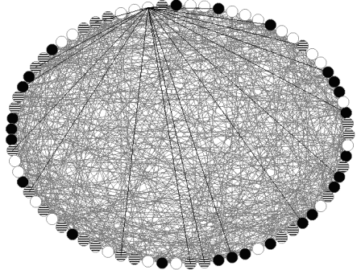

This was an attempt at replicating the results mentioned in Hybrid Evolutionary Algorithms for Graph Coloring by Galiner and Hao (Journal of Combinatorial Optimization 1999). A report can be found here (once again, this report is unintentionally college-term-assignment style). The resulting implementation was rather fast and we were able to replicate the results mentioned in the original paper. We then tried combining other heuristic methods like hill climbing and simulated annealing with a genetic algorithm. We were able to obtain promising results and we presented our results at a student level national conference.

A 3-coloring of a random tri-partite graph with 75 nodes. The fine mesh
within the elliptical arrangement of the nodes are the edges. The edges of one particular node are highlighted